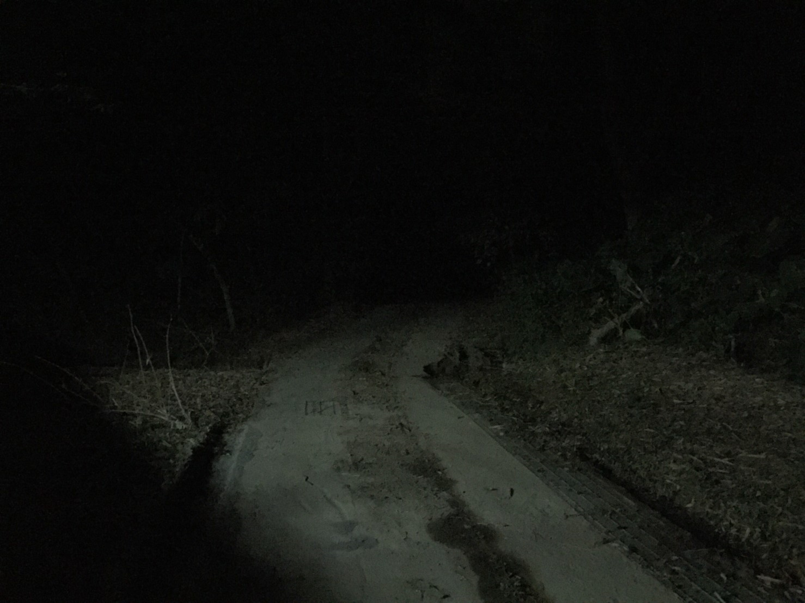
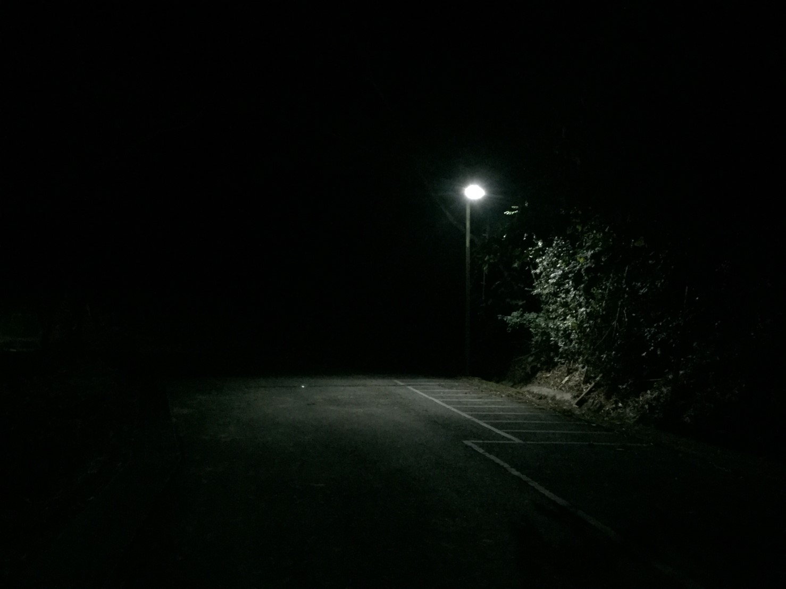

夜晚的樹林
《夜晚的樹林》以一次被編排的夜間表演為基礎，透過對感知條件的限制與轉換，以及身體在不同環境與速度下的知覺狀態，指向當代生活中人與夜晚、與自然之間的關係。
『其實整個東南亞都是「過亮」的，這個過亮跟我們的「過勞」也很有關係』 藉由光我們把很多東西推到很外邊了。在思考這件作品的時候，並不是先從光或是過勞開始的，而是在夜間散步時撞見一盞路燈的景象，它彷彿向我顯現我們與某種被遺落的關係。

進入樹林，黑暗之中感覺邊界消融了，弱化的視覺感官依舊存在，蟲鳴和森林的氣味，眼睛被重新包裹在身體裡。聲音傳來，在黑暗的樹林裡看不見聲音的來源，電吉它的聲響轉向如浪一般的耳鳴噪音，引擎聲，從身體到觀眾──觀眾出現了，眼前的大片光束，一輛不知名的卡車開了進來，吉它的聲響停止，車燈的光束像偶然在路上瞥見的景像或某個曾見過的電影場景──看到的是創造的畫面，用於記憶；卡車駛離樹林，搖晃的路還有風，留存在身體。（作品文字描述紀錄）
演出在一個沒有月光的夜晚進行。
電吉他的演奏是現場進行的，它與周圍環境相互呼應，微妙地改變空間氛圍，將觀眾更深地帶入空間，維持一種高度沉浸和期待的狀態。
觀眾聚集在路口的路燈下，被引領進入森林，從燈火通明的柏油路步入黑暗，隨後乘車離開，體驗速度變化帶來的身體感覺轉變。在黑暗中，世界不再由清晰的輪廓定義。
透過這種轉變——從緩慢沉浸到突然離開——黑暗中的持續時間被壓縮，從而產生強烈的體驗，隨後又突然回歸清晰，如同夢境的形成與中斷。
在這裡，夜晚變成了一種隨著體驗而消逝的東西─一段悄然流逝的記憶。